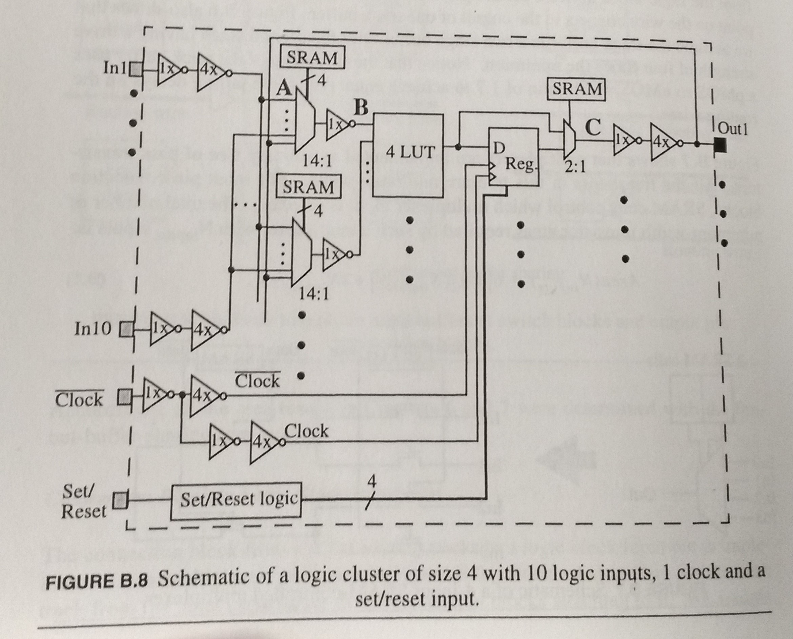
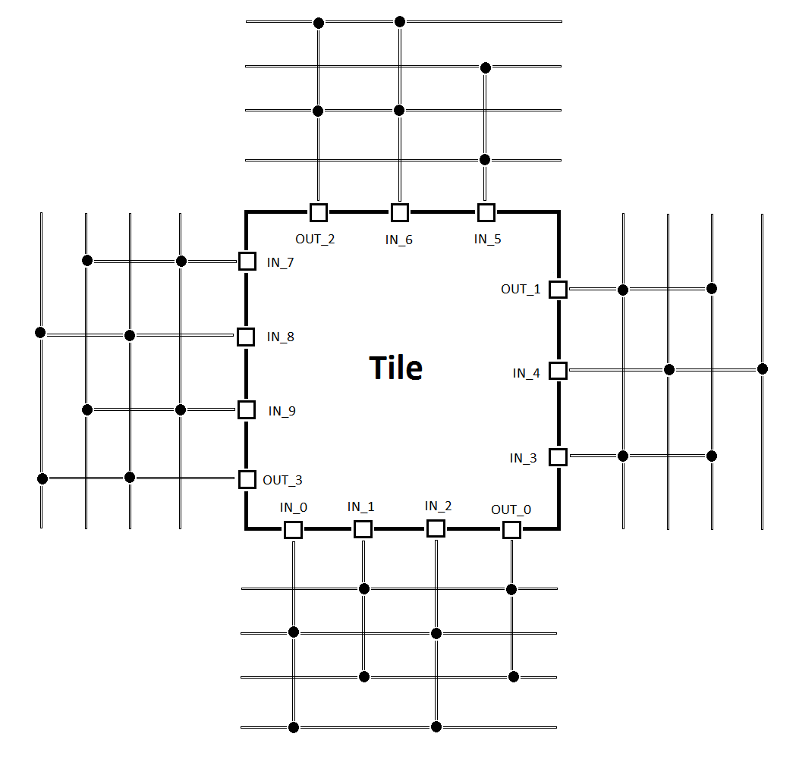
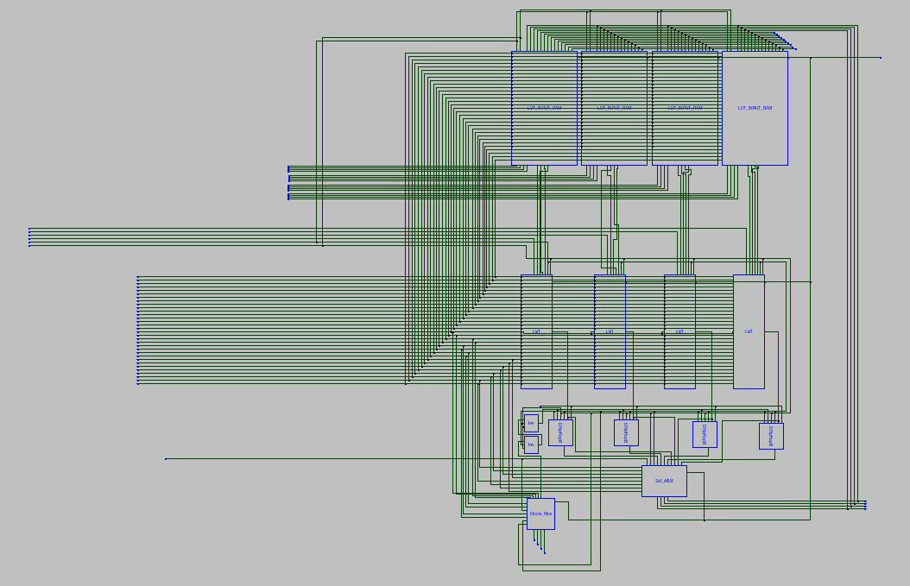
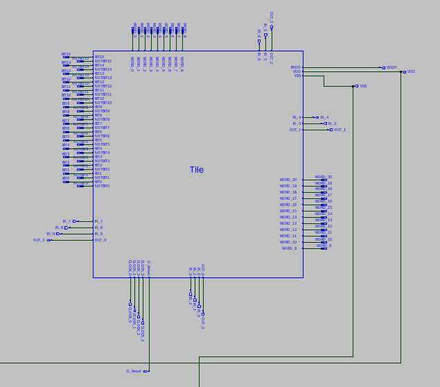

Tile¶
We are going to implement an FPGA with a single type of a Tile, which will have four LUTs (Look-Up-Table) inside (N = 4) and each LUT will have four inputs (K = 4), each output of the LUT will be connected to a D flip flop and after, a mux can choose between the D flip flop output or directly from the LUT (Block Logic Element) . Studies presented on the book have shown that LUTs with 4-inputs leads to FPGAs with the highest area-efficiency, and most commercial FPGAs are based on 4-input LUTs, also, Tiles consisting of multiple LUTs will have a better area efficiency.
(Fully connected cluster. Figure from the book)
The positioning of the pins around the Tile will be a full-perimeter configuration, which means it will be evenly distributed around the square to achieve the best area-efficiency. Each Tile will have Global wirings to program the SRAMs cells and to control the four different possible clocks to the registers, each Tile can only have one clock.
(Schematic taken from Sue)
(Schematic taken from Sue)